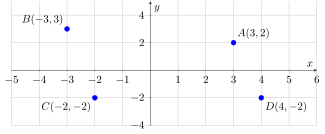
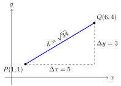
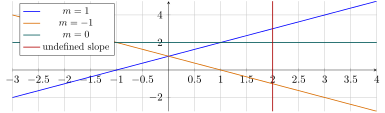
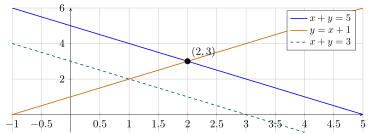
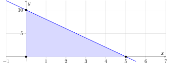
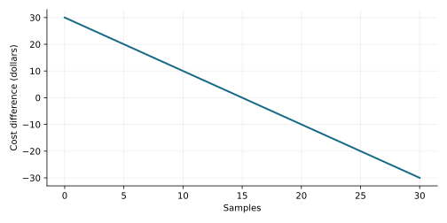

Coordinate Geometry, Lines, and Systems of Equations
Opening investigation: What does a calibration line tell us?
A laboratory instrument reports signal intensity \(S\) for a sample with concentration \(c\) (mg/L). Two reference standards give \((c,S)=(2,9)\) and \((8,27)\). Plot the two points on axes, label units, and draw the line through them. What does the rise in signal per unit concentration mean? What signal would you expect at \(c=5\)? Would the same model necessarily remain reliable at \(c=100\)? This investigation introduces coordinates, slope, linear models, and the importance of checking the domain of an applied model.
Learning outcomes
After this chapter, you should be able to: (1) locate points and interpret coordinates with units; (2) calculate and interpret distance and midpoint; (3) determine slope and equations of lines in multiple forms; (4) distinguish parallel and perpendicular lines; (5) model and interpret linear relationships; (6) solve systems graphically, algebraically, and using matrices; (7) distinguish unique, inconsistent, and dependent systems; (8) use R and Python for plotting and verification; and (9) connect secant slopes to the derivative concept introduced in calculus.
Prerequisite diagnostic
Solve \(3x-7=11\); simplify \(\frac{12-4}{6-2}\); and solve \(x+y=7\) for \(y\). Answers: \(x=6\), \(2\), and \(y=7-x\). Review Chapter 2 if solving equations or manipulating fractions is difficult.
The Cartesian coordinate plane
The Cartesian plane is formed by a horizontal \(x\)-axis and vertical \(y\)-axis meeting at the origin \((0,0)\). A point \((x,y)\) is an ordered pair: the first coordinate specifies horizontal position and the second vertical position. Units and scale matter in applications. For example, \((3,15)\) may mean 3 hours and 15 milligrams per liter; swapping coordinates changes the meaning.

Visual investigation 1.
For each labeled point, identify its quadrant. Reflect \(A\) across each axis and predict the new coordinates. Explain why points on axes belong to no quadrant.
Example 1: Coordinate interpretation. A measurement is represented by \((4,18)\), with time in minutes horizontally and temperature in degrees Celsius vertically. Interpret the point and explain why \((18,4)\) describes a different observation.
Worked solution. At 4 minutes, the recorded temperature is \(18^\circ\)C. The reversed pair instead represents 18 minutes and \(4^\circ\)C. The ordered pair is not interchangeable.
Guided practice 1.
Plot \(P(-4,1)\), \(Q(0,-3)\), and \(R(2,0)\). Which points lie on an axis? Reflect \(P\) in the \(y\)-axis. Check: \(Q,R\); reflected point \((4,1)\).
Distance between two points
Horizontal and vertical displacements from \(P(x_1,y_1)\) to \(Q(x_2,y_2)\) are \(\Delta x=x_2-x_1\) and \(\Delta y=y_2-y_1\). The Pythagorean theorem applied to the right triangle formed by these displacements gives \[\boxed{d(P,Q)=\sqrt{(x_2-x_1)^2+(y_2-y_1)^2}.}\] Squaring the displacements ensures the distance is independent of direction. The distance formula assumes both axes use compatible physical units and equal geometric scaling.

Example 2: Distance and units. Find the distance from \((-2,5)\) to \((4,-3)\).
Worked solution. \(\Delta x=4-(-2)=6\) and \(\Delta y=-3-5=-8\). Thus \(d=\sqrt{6^2+(-8)^2}=\sqrt{100}=10\) coordinate units. Reversing the points changes the signs of both displacements but not the distance.
Guided practice 2.
Find the distance between \((1,-1)\) and \((7,7)\). Check: \(10\) units.
Midpoints, partitions, and geometric averages
The midpoint of a segment is the point halfway between its endpoints. Average the horizontal coordinates and vertical coordinates separately: \[\boxed{M=\left(\frac{x_1+x_2}{2},\frac{y_1+y_2}{2}\right).}\] This formula is a coordinate-wise average, not the average of distances to the origin. More generally, the point a fraction \(t\) of the way from \(P\) to \(Q\) is \(P+t(Q-P)\), or \[(x,y)=\bigl(x_1+t(x_2-x_1),\;y_1+t(y_2-y_1)\bigr),\quad 0\le t\le1.\] This representation anticipates parametric curves and vectors.
Example 3: Midpoint and weighted position. Find the midpoint of \(A(-4,6)\) and \(B(8,-2)\) and the point one-quarter of the way from \(A\) to \(B\).
Worked solution. The midpoint is \((({-4+8})/2,(6-2)/2)=(2,2)\). For \(t=1/4\), \(A+\frac14(B-A)=(-4,6)+\frac14(12,-8)=(-1,4)\).
Guided practice 3.
Find the midpoint of \((3,9)\) and \((11,-1)\). Check: \((7,4)\).
Slope as a rate of change
For distinct points with \(x_2\ne x_1\), the slope of the line through them is \[\boxed{m=\frac{y_2-y_1}{x_2-x_1}=\frac{\Delta y}{\Delta x}.}\] Slope compares the change in the response variable with the change in the explanatory variable. It has units of “vertical units per horizontal unit.” Positive slope means the line rises as \(x\) increases; negative slope means it falls; zero slope is horizontal. A vertical line has undefined slope because its horizontal change is zero.

Example 4: Interpreting a laboratory slope. Standards \((2,9)\) and \((8,27)\) have concentration in mg/L and signal in instrument units. Compute the slope and interpret it.
Worked solution. \(m=(27-9)/(8-2)=18/6=3\) signal units per mg/L. Within the calibration range, a 1 mg/L increase in concentration corresponds to a predicted increase of 3 signal units. The slope is not “3 mg/L”; its units are a ratio.
Visual investigation 2.
Draw two triangles of different sizes along the same nonvertical line. Compute rise/run for each and explain why the ratios agree. Then sketch a vertical line and explain why rise/run cannot be evaluated there.
Guided practice 4.
Find and interpret the slope through \((1,12)\) and \((5,28)\) when \(x\) is days and \(y\) is milligrams. Check: \(4\) mg/day.
Equations of lines: three useful forms
A line can be represented in several algebraically equivalent ways, each emphasizing different information.
Slope-intercept form
\[\boxed{y=mx+b.}\] Here \(m\) is the slope and \(b\) is the vertical intercept \((0,b)\). The intercept is the model’s prediction at \(x=0\); it may be physically meaningful, meaningless, or outside the observed range.
Point-slope form
\[\boxed{y-y_1=m(x-x_1).}\] This form follows directly from the definition of slope and is particularly useful when a slope and one point are known.
Standard form and special lines
Standard form is \(Ax+By=C\), usually with integer coefficients. Horizontal lines are \(y=k\); vertical lines are \(x=h\). A vertical line cannot be written as \(y=mx+b\).
Example 5: Equation from two points. Find the equation through \((2,5)\) and \((6,13)\) in point-slope, slope-intercept, and standard forms.
Worked solution. The slope is \((13-5)/(6-2)=2\). Point-slope form: \(y-5=2(x-2)\). Expand: \(y=2x+1\). Rearranging: \(2x-y=-1\). Substituting \((6,13)\) gives \(13=12+1\), confirming the equation.
Example 6: Equation with undefined slope. Find the line through \((3,-2)\) and \((3,7)\).
Worked solution. Both points have \(x=3\), so the line is \(x=3\). Its slope is undefined; attempting to divide by \(3-3=0\) is invalid.
Guided practice 5.
Find the line through \((-1,4)\) with slope \(-3\). Check: \(y=-3x+1\).
Intercepts and graphical interpretation
An \(x\)-intercept is a point on the horizontal axis, so its \(y\)-coordinate is zero. A \(y\)-intercept is on the vertical axis, so its \(x\)-coordinate is zero. To find the intercepts of \(3x+2y=12\), set \(y=0\) to obtain \((4,0)\), and set \(x=0\) to obtain \((0,6)\). The intercepts provide a fast graphing method, but do not by themselves justify extrapolating a model beyond its data.
Example 7: Intercepts in a budget model. A program has a budget of \(240\) dollars. Kits cost \(12\) dollars and brochures cost \(3\) dollars. Interpret \(12k+3b=240\) in the first quadrant.
Worked solution. The intercepts are \((20,0)\) and \((0,80)\). The first represents 20 kits and no brochures; the second represents no kits and 80 brochures. Feasible quantities also require \(k,b\ge0\) and, if purchases must be whole, integer values.
Guided practice 6.
Find both intercepts of \(4x-5y=20\). Check: \((5,0)\) and \((0,-4)\).
Parallel and perpendicular lines
Two distinct nonvertical lines are parallel precisely when their slopes are equal. Two nonvertical lines with nonzero slopes are perpendicular precisely when \(m_1m_2=-1\), so their slopes are negative reciprocals. A horizontal line is perpendicular to a vertical line. Be careful: the negative reciprocal of \(2/3\) is \(-3/2\), not \(-2/3\).
Example 8: Parallel and perpendicular through a point. Find lines through \((2,-1)\) parallel and perpendicular to \(3x-2y=8\).
Worked solution. Rewrite the given line as \(y=\frac32x-4\), so \(m=3/2\). The parallel line is \(y+1=\frac32(x-2)\), or \(y=\frac32x-4\). In this case \((2,-1)\) lies on the original line, so it is the same line rather than a distinct parallel line. The perpendicular line has slope \(-2/3\): \(y+1=-\frac23(x-2)\), or \(y=-\frac23x+\frac13\).
Concept check.
Why is it important to distinguish “same line” from “distinct parallel lines”? Draw an example.
Guided practice 7.
Find a line through \((0,4)\) perpendicular to \(y=\frac14x+2\). Check: \(y=-4x+4\).
Building and evaluating linear models
A linear model \(y=mx+b\) assumes a constant rate of change over its intended domain. The intercept represents the predicted baseline, and the slope represents the change in response per unit change in predictor. A model can fit two observed points exactly but still be inappropriate outside the observation range or when the real process is nonlinear.
Example 9: Calibration curve. Using \((c,S)=(2,9)\) and \((8,27)\), construct the calibration equation, predict signal at \(c=5\), and estimate concentration when \(S=21\).
Worked solution. Slope is \(m=3\). Use \((2,9)\): \(9=3(2)+b\), so \(b=3\). The calibration equation is \(S=3c+3\). At \(c=5\), \(S=18\). For \(S=21\), solve \(21=3c+3\) to obtain \(c=6\) mg/L. Both predictions are within the observed concentration range \([2,8]\), so they are interpolations.
Visual investigation 3: interpolation and extrapolation.
Plot the calibration points and fitted line for \(0\le c\le12\). Shade or label the observed interval \([2,8]\). Compare predictions at \(c=5\) and \(c=11\). Why does the second require stronger assumptions?
Guided practice 8.
A reading changes from \(14\) to \(26\) between times \(t=1\) and \(t=4\). Find a linear model and predict the reading at \(t=3\). Check: \(y=4t+10\); \(22\).
Systems of two linear equations
A system asks for values satisfying two or more equations simultaneously. Geometrically, a solution is an intersection of lines. Two nonparallel lines intersect once (unique solution); distinct parallel lines never intersect (no solution); coincident lines have infinitely many solutions.
Substitution method
Solve one equation for one variable and substitute into the other. This is especially convenient when one coefficient is \(1\) or \(-1\).
Example 10: Substitution. Solve \(x+y=7\) and \(2x-y=2\).
Worked solution. From the first equation, \(y=7-x\). Substitute: \(2x-(7-x)=2\), so \(3x=9\) and \(x=3\). Then \(y=4\). Check: \(3+4=7\) and \(2(3)-4=2\). Thus \((3,4)\) is the unique solution.
Elimination method
Add suitable multiples of the equations so one variable cancels. Multiplying an entire equation by a nonzero constant preserves its solution set.
Example 11: Elimination. Solve \(2x+3y=13\) and \(4x-y=5\).
Worked solution. Multiply the second equation by \(3\): \(12x-3y=15\). Add to the first: \(14x=28\), so \(x=2\). Then \(4(2)-y=5\) gives \(y=3\). Verify \(2(2)+3(3)=13\).
Guided practice 9.
Solve \(3x+y=11\) and \(x-y=1\) using both methods. Check: \((3,2)\).
Visual investigation 4: the geometry of solution counts

The blue and orange lines meet at \((2,3)\). The blue and dashed green lines have equal slopes but different intercepts; they never meet. A second equation obtained by multiplying \(x+y=5\) by \(2\) would describe exactly the same blue line. Use these three cases to explain why algebra can end in a numerical answer, a contradiction such as \(0=2\), or an identity such as \(0=0\).
Dependent and inconsistent systems
Example 12: No solution. Solve \(2x-4y=6\) and \(x-2y=5\).
Worked solution. Doubling the second equation gives \(2x-4y=10\), contradicting \(2x-4y=6\). The lines are parallel and distinct, so the system is inconsistent and has no solution.
Example 13: Infinitely many solutions. Solve \(2x+4y=8\) and \(x+2y=4\).
Worked solution. The first equation is twice the second. They represent the same line. Every pair satisfying \(x+2y=4\) is a solution; for example, \((x,y)=(4-2t,t)\) for any real \(t\).
Guided practice 10.
Classify \(3x+6y=12\) and \(x+2y=4\); then classify \(3x+6y=12\) and \(x+2y=5\). Check: infinitely many; none.
Matrices and determinants: a first look
A two-variable system can be written \(A\mathbf{x}=\mathbf{b}\), where \[A=\begin{pmatrix}a&b\\c&d\end{pmatrix},\quad \mathbf{x}=\begin{pmatrix}x\\y\end{pmatrix},\quad\mathbf{b}=\begin{pmatrix}e\\f\end{pmatrix}.\] The determinant \(\det(A)=ad-bc\) helps classify the system. If \(ad-bc\ne0\), the coefficient matrix is invertible and there is exactly one solution. If \(ad-bc=0\), there may be no solution or infinitely many; additional consistency checks are required. For a nonsingular \(2\times2\) system, Cramer’s rule gives \[x=\frac{ed-bf}{ad-bc},\qquad y=\frac{af-ec}{ad-bc}.\]
Example 14: Determinant check. For \(2x+3y=13\), \(4x-y=5\), calculate the determinant and verify the solution.
Worked solution. \(A=\left(\begin{smallmatrix}2&3\\4&-1\end{smallmatrix}\right)\), so \(\det(A)=2(-1)-3(4)=-14\ne0\). Then \(x=(13(-1)-3(5))/(-14)=2\), and \(y=(2(5)-13(4))/(-14)=3\).
Guided practice 11.
Calculate the determinant for \(x+2y=5\), \(2x+4y=10\). Does a zero determinant alone tell you whether the system is inconsistent? Check: determinant zero; no.
Applied case study: two-test calibration and mixture design
Suppose a laboratory prepares a mixture using two stock solutions. Stock A contains \(4\) mg of a compound per mL and Stock B contains \(10\) mg per mL. A final mixture must have total volume \(20\) mL and contain \(140\) mg of the compound. Let \(a\) and \(b\) denote the volumes in mL.
Example 15: Mixture design as a system. Determine the required amounts of stocks A and B.
Worked solution. Total volume gives \(a+b=20\). Total compound mass gives \(4a+10b=140\). Substitute \(a=20-b\): \(4(20-b)+10b=140\), so \(80+6b=140\) and \(b=10\) mL. Hence \(a=10\) mL. Check: total volume \(20\) mL and compound mass \(4(10)+10(10)=140\) mg. Both amounts are nonnegative, as required.
Visual investigation 5: feasibility.
Graph \(a+b=20\) and \(4a+10b=140\) in the first quadrant. Mark their intersection. What would a negative solution mean physically? How would the intersection move if the required mass were changed to 160 mg?
Computational laboratory A: plotting points and lines
The first laboratory compares a hand-derived calibration line with its computational graph. Execute the R code, then execute the Python code separately. Both produce the same mathematical model; programming syntax differs, but the interpretation should not.
R code
concentration <- c(2, 8)
signal <- c(9, 27)
slope <- diff(signal) / diff(concentration)
intercept <- signal[1] - slope * concentration[1]
cat("Slope:", slope, "Intercept:", intercept, "\n")
plot(concentration, signal, pch=19, xlim=c(0, 12),
ylim=c(0, 40), xlab="Concentration (mg/L)",
ylab="Signal (units)", main="Calibration line")
abline(a=intercept, b=slope, col="blue", lwd=2)
abline(v=c(2,8), lty=3, col="gray")
cat("Signal at 5 mg/L:", slope*5+intercept, "\n")Python code
import numpy as np
import matplotlib.pyplot as plt
c = np.array([2.0, 8.0])
s = np.array([9.0, 27.0])
m = (s[1]-s[0])/(c[1]-c[0])
b = s[0]-m*c[0]
print("Slope:", m, "Intercept:", b)
x = np.linspace(0, 12, 200)
plt.scatter(c, s, color="black", label="Standards")
plt.plot(x, m*x+b, label="Calibration model")
plt.axvline(2, ls="--", color="gray")
plt.axvline(8, ls="--", color="gray")
plt.xlabel("Concentration (mg/L)")
plt.ylabel("Signal (units)")
plt.legend(); plt.tight_layout(); plt.show()
print("Signal at 5 mg/L:", m*5+b)Interpretation questions.
What are the units of slope? Which concentrations are interpolations? What mathematical information is lost if axis labels and units are omitted?
Computational laboratory B: solving and verifying systems
This laboratory uses matrix operations to solve a two-equation system and checks the residual \(A\mathbf{x}-\mathbf{b}\). A residual close to zero provides a numerical verification, not a substitute for explaining the model.
R code
A <- matrix(c(1,4,1,10), nrow=2, byrow=TRUE)
rhs <- c(20, 140)
solution <- solve(A, rhs)
print(solution)
print(A %*% solution - rhs)
cat("Determinant:", det(A), "\n")Python code
import numpy as np
A = np.array([[1.0,1.0],[4.0,10.0]])
rhs = np.array([20.0,140.0])
solution = np.linalg.solve(A, rhs)
print("Solution:", solution)
print("Residual:", A @ solution - rhs)
print("Determinant:", np.linalg.det(A))Interpretation questions.
Explain why the two solution coordinates are volumes. What does a residual of zero mean? Change the target mass to 160 mg and interpret the new result.
Computational laboratory C: slopes approaching a tangent
For the curve \(y=x^2\), calculate the slope of the secant line through \((2,4)\) and \((2+h,(2+h)^2)\): \[m_h=\frac{(2+h)^2-4}{h}=4+h,\qquad h\ne0.\] As \(h\) approaches zero, these slopes approach \(4\). This is a preview of the derivative, which formalizes instantaneous rate of change.
R code
h <- c(1, 0.5, 0.1, 0.01, -0.01, -0.1)
secant <- ((2+h)^2 - 4)/h
print(data.frame(h=h, secant_slope=secant))
plot(h, secant, pch=19, xlab="h", ylab="Secant slope")
abline(h=4, col="blue", lty=2)Python code
import numpy as np
import matplotlib.pyplot as plt
h = np.array([1, 0.5, 0.1, 0.01, -0.01, -0.1])
slopes = ((2+h)**2-4)/h
for step, slope in zip(h, slopes):
print(f"h={step:7.3f}, secant slope={slope:7.3f}")
plt.scatter(h, slopes)
plt.axhline(4, linestyle="--", color="black")
plt.xlabel("h"); plt.ylabel("Secant slope")
plt.tight_layout(); plt.show()Interpretation questions.
Why must \(h\ne0\) in the secant formula? Why can the limiting slope nevertheless be \(4\)? Compare the algebraic simplification with the numerical output.
Guided practice workshop: five integrated problems
Geometry. Points \(A(-2,1)\) and \(B(4,9)\) represent two locations on a scaled map. Find distance, midpoint, and the slope of \(AB\). Check: \(10\), \((1,5)\), and \(4/3\).
Model building. A quantity changes from 6 units to 21 units as time changes from 2 to 7 minutes. Derive the linear equation and predict the value at time 5. Check: \(y=3t\) and \(15\).
Line relationships. Find a line through \((1,2)\) perpendicular to \(y=-2x+3\). Check: \(y=\frac12x+\frac32\).
System classification. Determine whether \(x-3y=2\) and \(2x-6y=4\) have zero, one, or infinitely many solutions. Explain graphically. Check: infinitely many.
Mixtures. Two solutions have concentrations 2 mg/mL and 8 mg/mL. Find volumes totaling 30 mL that contain 150 mg. Check: 15 mL of each.
Common misconceptions and mathematical habits
Confusing coordinates and displacements. A point gives location; differences of coordinates give changes.
Ignoring units in slope. Always report response units per predictor unit.
Using the slope formula for vertical lines. Division by zero is undefined; the correct equation is \(x=k\).
Assuming all systems have one solution. Compare slopes and intercepts, or use elimination, before concluding.
Confusing a zero determinant with no solution. Zero determinant means the unique-solution test fails; consistency must still be checked.
Overinterpreting extrapolation. A straight-line fit through two points does not guarantee linearity outside the observed range.
Chapter summary and formula reference
| Quantity | Formula or principle |
|---|---|
| Distance | \(\sqrt{(x_2-x_1)^2+(y_2-y_1)^2}\) |
| Midpoint | \(((x_1+x_2)/2,(y_1+y_2)/2)\) |
| Slope | \((y_2-y_1)/(x_2-x_1)\) when \(x_2\ne x_1\) |
| Point-slope line | \(y-y_1=m(x-x_1)\) |
| Slope-intercept line | \(y=mx+b\) |
| Parallel lines | Equal slopes (or both vertical) |
| Perpendicular lines | \(m_1m_2=-1\) when both slopes are defined and nonzero |
| Two-by-two determinant | \(ad-bc\) |
Calculus connection: secants, tangents, and local change
A straight line has the same slope between every pair of points. A curved graph generally does not. Calculus studies the limit of secant slopes as the two points come together. For \(f(x)=x^2\), the secant slope from \(x=a\) to \(x=a+h\) is \[\frac{f(a+h)-f(a)}{h}=\frac{(a+h)^2-a^2}{h}=2a+h,\quad h\ne0.\] The expression approaches \(2a\) as \(h\to0\). At \(a=2\), the instantaneous slope is \(4\), consistent with Laboratory C. In a calculus course, this becomes the derivative \(f'(a)=2a\). The key precalculus skills are manipulating expressions, evaluating differences, and interpreting slope with units.
Extended investigation I: translating and rotating the geometric picture
Consider \(A(1,2)\) and \(B(5,5)\). Their displacement is \((4,3)\) and their distance is \(5\). Translate both points by \((2,-4)\) to get \(A'(3,-2)\) and \(B'(7,1)\). Calculate the new distance and slope. Then reflect the original points across the \(y\)-axis. Compare the new slope with the original slope. Translation preserves distance and slope; reflection preserves distance but may change the sign of slope. Explain why by considering coordinate differences.
Guided practice.
Translate \((0,1)\) and \((3,5)\) by \((-2,6)\). Compute the original and translated distances. Check: both distances are \(5\).
Extended investigation II: sensitivity of a calibration model
Suppose the first calibration standard remains \((2,9)\), but the second measurement varies from \((8,27)\) to \((8,28)\). The slope changes from \(3\) to \(19/6\approx3.167\) signal units per mg/L. The intercept changes from \(3\) to \(9-2(19/6)=8/3\). Compare the two models at \(c=5\) and \(c=10\). Which prediction is more sensitive? Discuss why measurement noise, multiple standards, and model validation matter in scientific applications.
Extended investigation III: three equations and three unknowns
A system may involve more than two variables. Consider \[x+y+z=6,\qquad x-y+z=2,\qquad 2x+y-z=1.\] Subtract the second equation from the first to obtain \(2y=4\), so \(y=2\). Then \(x+z=4\). From the third, \(2x-z=-1\). Add these to get \(3x=3\), hence \(x=1\) and \(z=3\). Verify in all three original equations. The same elimination principle extends to larger matrices, although computational tools become increasingly useful.
Extended investigation IV: piecewise linear models
Many real-world relationships have different slopes in different operating regimes. A service might cost \(C(t)=10+2t\) for \(0\le t\le5\), but \(C(t)=20+1.5(t-5)\) for \(t>5\). Both formulas give \(20\) at \(t=5\), so the model is continuous there, but the rate of change shifts from 2 to 1.5 cost units per time unit. Plot both pieces and explain why a single straight line would misrepresent the changing rate.
Extended investigation V: constrained intersections
Consider \(x+y=12\) and \(2x+5y=42\), with \(x,y\ge0\). Substitution gives \(x=12-y\) and \(24-2y+5y=42\), so \(y=6\) and \(x=6\). Now change the second equation to \(2x+5y=75\). The algebraic solution is \(y=17\), \(x=-5\), which satisfies both equations but violates nonnegativity. Explain why a mathematically correct solution may be infeasible in an applied model.
Extended investigation VI: linear inequalities in two variables
A linear inequality such as \(2x+y\le 10\) describes a half-plane rather than a line. First graph the boundary \(2x+y=10\); because equality is allowed, draw a solid line. Test the origin: \(2(0)+0\le10\) is true, so shade the side containing \((0,0)\). In a production model, we may also require \(x\ge0\) and \(y\ge0\), restricting the solution to the first quadrant. The intersection of these three half-planes is a triangular feasible region with vertices \((0,0)\), \((5,0)\), and \((0,10)\).

Example 16: Resource feasibility. A clinic assembles two kinds of educational kits. A standard kit uses 2 units of a resource and a premium kit uses 1 unit. At most 10 units are available. Express the feasible combinations, assuming nonnegative quantities.
Worked solution. If \(x\) and \(y\) are the numbers of standard and premium kits, respectively, then \(2x+y\le10\), \(x\ge0\), and \(y\ge0\). Whole-kit decisions also require integer values. The graphical feasible region contains all continuous solutions, while feasible integer decisions are its lattice points.
Guided practice 12.
Decide whether \((2,5)\) and \((4,4)\) satisfy \(2x+y\le10\). Check: yes; no.
Extended investigation VII: an introductory optimization question
Suppose the clinic earns 3 dollars of benefit per standard kit and 2 dollars per premium kit, with resource constraint \(2x+y\le10\). The objective is \(B=3x+2y\). On the triangular feasible region, evaluate the objective at its three vertices: \(B(0,0)=0\), \(B(5,0)=15\), and \(B(0,10)=20\). Thus the largest value occurs at \((0,10)\), giving 20 units of benefit. This illustrates a fundamental idea from linear programming: a linear objective over a bounded polygon has an optimum at a vertex. More complex constraints can create many vertices, but the same geometric principle applies.
Visual investigation 6.
Draw the level lines \(3x+2y=10\), \(3x+2y=15\), and \(3x+2y=20\) on the feasible-region graph. Explain why increasing the target shifts the line away from the origin. What changes if the objective is \(B=5x+y\)?
Extended investigation VIII: interpreting residuals and uncertainty
A line fitted to observed data rarely passes through every measurement. A residual is observed response minus predicted response: \(e_i=y_i-\widehat y_i\). Consider the calibration model \(\widehat S=3c+3\) and measurements \((2,9)\), \((4,16)\), \((6,20)\), and \((8,27)\). Predicted signals are \(9,15,21,27\), giving residuals \(0,1,-1,0\). Residuals help us see where a model overpredicts or underpredicts. In later statistics courses, residual patterns are used to assess whether a linear model is appropriate. Here, the key distinction is between a mathematical line and imperfect empirical measurements.
| Concentration | Observed signal | Predicted signal | Residual |
|---|---|---|---|
| 2 | 9 | 9 | 0 |
| 4 | 16 | 15 | 1 |
| 6 | 20 | 21 | -1 |
| 8 | 27 | 27 | 0 |
Guided practice 13.
A model predicts 18 units, but the observed reading is 16. Find the residual and explain its sign. Check: \(-2\); the model overpredicts by 2 units.
Extended investigation IX: geometric derivation of the line equation
Let a nonvertical line pass through \(P(x_1,y_1)\) with slope \(m\). For any other point \(Q(x,y)\) on the line, the slope definition gives \((y-y_1)/(x-x_1)=m\), provided \(x\ne x_1\). Multiplying yields \(y-y_1=m(x-x_1)\); this also holds at \(P\) itself, where both sides are zero. Thus the point-slope formula is not merely a rule to memorize: it follows from the requirement that all points on a straight line share a common rise-to-run ratio. Expanding gives \(y=mx+(y_1-mx_1)\), so the intercept is \(b=y_1-mx_1\).
Example 17: Derivation in context. A line through \((3,14)\) has slope \(-2\) units per minute. Derive its equation.
Worked solution. Constant slope means \(y-14=-2(t-3)\). Therefore \(y=-2t+20\). At \(t=3\), the model returns \(14\) as required; at \(t=0\), the extrapolated intercept is \(20\).
Extended investigation X: why two equations can nearly agree
Consider \(x+y=10\) and \(x+1.01y=10.05\). Subtracting gives \(0.01y=0.05\), so \(y=5\) and \(x=5\). If the second right-hand side changes slightly to \(10.06\), then \(0.01y=0.06\), giving \(y=6\) and \(x=4\). A change of only \(0.01\) in a measurement has moved each coordinate by 1. This is an example of sensitivity: systems with nearly parallel lines may produce substantially different intersections when data change slightly. The determinant is \(1(1.01)-1(1)=0.01\), small but nonzero. A small determinant by itself is not a scale-invariant condition number, but it alerts us to examine numerical stability and units.
Guided practice 14.
Solve \(x+y=10\) and \(x+1.02y=10.10\). Check: \((5,5)\).
Extended investigation XI: a three-stage model comparison
A simplified physiological measurement rises linearly from 5 to 17 units between 0 and 4 minutes, stays at 17 units until 6 minutes, and then falls to 11 units by 9 minutes. Construct a piecewise linear function. The first slope is \((17-5)/4=3\), so \(y=5+3t\) for \(0\le t\le4\). The middle slope is zero, so \(y=17\) for \(4<t\le6\). The final slope is \((11-17)/(9-6)=-2\), so \(y=17-2(t-6)\) for \(6<t\le9\). The pieces agree at their shared boundaries. Explain why the graph is continuous but changes slope abruptly at \(t=4\) and \(t=6\). This prepares you to distinguish continuity and differentiability in calculus.
Chapter exercises
Instructions. Show reasoning, label axes and units in applications, and verify system solutions. Technology may be used to check answers but not replace explanations.
Coordinates, distance, and midpoint
Plot \((-3,2)\), \((4,-1)\), and \((0,5)\); identify quadrants or axes.
Find the distance between \((2,3)\) and \((8,11)\).
Find the midpoint of \((-6,4)\) and \((10,-2)\).
Find the point three-quarters of the way from \((0,0)\) to \((8,12)\).
Prove using the distance formula that \((0,0)\), \((3,4)\), and \((6,0)\) form an isosceles triangle.
Explain why switching the axes of a measurement plot can change the meaning of slope.
Slope and equations of lines
Find the slope through \((1,7)\) and \((5,-1)\).
Write the equation through \((-2,3)\) and \((4,9)\) in two forms.
Find the intercepts of \(5x+2y=20\).
Write an equation for the horizontal line through \((3,-4)\).
Write an equation for the vertical line through \((-5,2)\).
Find a line through \((2,1)\) parallel to \(y=3x-7\).
Find a line through \((2,1)\) perpendicular to \(y=3x-7\).
Explain why two different lines with the same slope never intersect.
Determine whether \((1,2)\), \((3,6)\), and \((5,10)\) are collinear.
Systems of equations
Solve \(x+y=9\) and \(x-y=3\) by substitution.
Solve \(2x+3y=12\) and \(x-y=1\) by elimination.
Classify \(2x+4y=6\) and \(x+2y=3\).
Classify \(2x+4y=6\) and \(x+2y=5\).
Compute the determinant of the matrix with first row \((3,1)\) and second row \((2,4)\).
Use a matrix method to solve \(3x+y=11\), \(x-y=1\).
Explain why a determinant of zero does not by itself imply inconsistency.
Graph \(y=2x+1\) and \(y=-x+7\) and identify their intersection.
Applications and mathematical reasoning
A sensor reads 11 at concentration 2 and 29 at concentration 8. Build a calibration line.
Using the preceding calibration, estimate concentration when the signal is 20.
Explain why using the calibration line at concentration 100 is extrapolation.
A mixture uses 3 mg/mL and 9 mg/mL stocks. Find volumes totaling 20 mL and 120 mg.
A clinic charges a fixed 25 dollars and 8 dollars per visit. Interpret slope and intercept.
Find the average rate of change of \(f(x)=x^2+1\) from \(x=1\) to \(x=4\).
For \(f(x)=x^2\), simplify \([f(3+h)-f(3)]/h\) for \(h e0\).
Explain the difference between a secant slope and a tangent slope.
Construct a piecewise linear model with slopes 2 and 5 that joins continuously at \(x=3\).
Choose two points with slope \(-2\) and explain the units in an original applied context.
Calculus-readiness checkpoint
Derive the formula for slope from two points and explain why the denominator must be nonzero.
For \(f(x)=3x^2-2x\), simplify \([f(a+h)-f(a)]/h\) for \(h\ne0\). Check: \(6a+3h-2\).
Evaluate the preceding simplified expression as \(h\) approaches zero, and explain its geometric meaning. Check: \(6a-2\); limiting secant slope.
Explain why the rate of change of a linear function is constant while that of a quadratic is not.
A calibration line has slope \(4\) signal units per mg/L. Interpret the slope as a rate and describe one reason it may not remain constant for all concentrations.
Looking ahead to Chapter 4
Chapter 4 develops functions, graphs, and multiple representations. The coordinate plane, slope, and linear models in this chapter provide the language for describing how an input determines an output. You will extend these ideas to nonlinear functions and compare their rates of change.
Extended application: Comparing calibration services
A facility compares a service with a fixed fee of 40 dollars and 3 dollars per sample against a second service charging 10 dollars plus 5 dollars per sample. The quantities in this investigation are illustrative rather than measured observations.
Formulating the mathematical model
The proposed relationship is \[D(x)=(40+3x)-(10+5x).\] Before calculating, identify the input and output, their units, and the interval on which the model is being studied. Distinguish the mathematical domain from the practical domain. The numerical study uses inputs from \(0\) to \(30\).
Example 18: Analytical investigation. Find the break-even sample count and explain the sign of \(D\) on either side. Identify the slope and its units.
Worked solution. \(30-2x=0\) gives 15 samples. The first service costs more below 15 and less above 15. Slope is \(-2\) dollars per sample.
Connecting numerical and graphical representations
| Samples | Cost difference (dollars) |
|---|---|
| 0 | 30 |
| 7.5 | 15 |
| 15 | 0 |
| 22.5 | -15 |
| 30 | -30 |

Interpretation. Compare the tabulated values with the graph. Identify the intervals over which the output increases or decreases, and distinguish a sampled extremum from an exact analytical extremum. Explain whether interpolation and extrapolation have the same justification in this setting.
R implementation
The following standalone script defines the model, generates predictions, and draws a labeled graph. Read the formula before running the code. The sampled range is a numerical diagnostic, not a proof of the exact range.
# Applied investigation: Comparing calibration services
# 1. Define the input domain and model
x <- seq(0, 30, length.out = 301)
y <- 30-2*x
# 2. Inspect numerical predictions
idx <- unique(round(seq(1, length(x), length.out = 5)))
print(data.frame(input = x[idx], output = y[idx]))
# 3. Visualize the model with labeled axes
plot(x, y, type = "l", lwd = 2, col = "#176B87",
xlab = "Samples", ylab = "Cost difference (dollars)")
grid()
# 4. Check the sampled output range
print(range(y))Python implementation
Repeat the same investigation using NumPy arrays and Matplotlib. Compare the printed predictions with the R output, allowing for rounding.
# Applied investigation: Comparing calibration services
import numpy as np
import matplotlib.pyplot as plt
# 1. Define the input domain and model
x = np.linspace(0, 30, 301)
y = 30-2*x
# 2. Inspect numerical predictions
idx = np.unique(np.linspace(0, len(x)-1, 5).round().astype(int))
print(np.column_stack((x[idx], y[idx])))
# 3. Visualize the model with labeled axes
fig, ax = plt.subplots(figsize=(7, 3.6))
ax.plot(x, y, "-", color="#176B87", linewidth=2)
ax.set(xlabel="Samples", ylabel="Cost difference (dollars)")
ax.grid(alpha=0.22)
ax.spines[["top", "right"]].set_visible(False)
fig.tight_layout()
plt.show()
# 4. Check the sampled output range
print(np.min(y), np.max(y))Guided practice: checking the model
Calculate the outputs at the two endpoints by hand. Compare them with the numerical table.
Select an interior input not listed in the table. Predict the output before evaluating it in either language.
Explain the meaning of the difference between the two endpoint outputs, including units. If appropriate, calculate the average rate of change.
Identify a physical assumption of the model and describe a circumstance in which it would fail.
Chapter project: investigating Comparing calibration services
Prepare a short technical report for a reader who has not studied the model. Use the preceding case as a starting point, but develop your own investigation rather than merely reproducing the worked example.
State a quantitative question that can be answered using the model. Define all variables, units, and restrictions.
Modify one meaningful numerical parameter in the formula. Explain what the change represents in the original context. Derive the revised formula and predict the direction of change before computing.
Compare the original and revised models at five common admissible inputs. Present a labeled table and explain the largest difference in the table.
Produce a graph containing both models on the same axes. Use a legend and distinguish the curves with line styles or markers. Explain the shape and any intersections.
Solve your quantitative question algebraically where possible. Verify the result using R and Python; report any differences due to numerical precision.
Discuss at least two limitations. Describe what measurements would be needed to assess the model in practice. Do not present simulated predictions as empirical evidence.
Project deliverables and assessment
Submit a two- to three-page report, the two runnable scripts, and the labeled figure. The report should stand on its own without requiring the reader to inspect the code.
| Criterion | Points |
|---|---|
| Mathematical formulation and domain | 20 |
| Analytical reasoning and verification | 25 |
| Reproducible R and Python computations | 20 |
| Graph and table quality | 15 |
| Interpretation and limitations | 20 |
| Total | 100 |
Companion scripts
Interactive investigation: Intersection of two lines
Enable JavaScript to explore the model.
Explore and explain: Find the intersection algebraically. When are the lines parallel or identical?